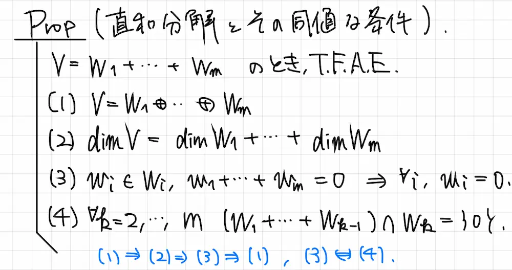

ゼミ紹介
-
流体力学ゼミ
- 完全流体
- 粘性流体
- レイノルズ数
詳細
空気や水などをはじめとする、身近な存在でありながら扱うのが難しい「流体」について勉強しています。工学系の人と理学系の人が集まり、専門的な教科書の輪読をしています。
-
佐武線型ゼミ
- 線型代数
- 固有値
- 固有ベクトル
- テンソル
詳細
線型代数は「線型空間」という空間が持つ性質を調べていく分野です。抽象的な線型空間を調べるために、具体的な行列という道具を使って議論するのが特徴です。工学的にも応用が多く、さまざまな学部・学科・学年のメンバーとともに学習を進めています。
- 
-
量子計算ゼミ
- 量子テレポーテーション
- Shorのアルゴリズム
- 離散対数問題
詳細
量子計算とは、量子力学の原理を応用した量子コンピュータの理論を扱う分野です。従来のコンピューターでは莫大な時間がかかる計算を、高速で処理することが期待されています。
-
表現論ゼミ
- Fulton Harris
- 線型代数
- 代数学
詳細
物理などで様々な応用がある表現論を勉強しています。はじめに有限群の表現論を扱い、最終的にはリー群・リー環の表現論を目指しています。数学専攻のB2, B3で集まり、洋書を輪読しています。
-
群論ゼミ
- 集合論
- 群
- 準同型定理
- 群の作用
詳細
代数学の基礎となる”群”という概念について勉強しています。群論は対称性を表すものとして物理などの分野でも使われています。B1で輪読を行い、抽象的な概念を丁寧に理解しています。
-
有機化学演習ゼミ
- 反応機構
- 選択性
- 立体化学
詳細
ウォーレン有機化学を用いて、各反応の機構や応用などを勉強しています。化学専攻のB2で演習問題について議論し、理解を深めています。
-
b4院試対策進捗報告会
- 進捗報告
- 情報共有
詳細
大学院入試を受験予定のb4が、学習の進捗報告や、院試に役立つ情報の共有を週一回行っています。本報告会の目的は、メンバーで互いに管理し合うことで、継続的な院試対策をすることです。現在は他大学院の数学・物理・情報系専攻を受験予定のメンバーが在籍しています。